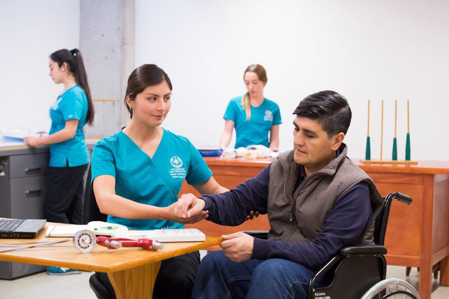

Informació General
La Federació Mundial de Terapeutes Ocupacionals (WFOT) defineix a la Teràpia Ocupacional com una professió que s'ocupa de la promoció de la salut i el benestar a través de l'ocupació. El principal objectiu de la teràpia ocupacional és capacitar les persones per participar en les activitats de la vida diària. Els terapeutes ocupacionals aconsegueixen aquest resultat mitjançant l'habilitació dels individus per realitzar aquelles tasques que optimitzaran la seva capacitat per participar, o mitjançant la modificació de l'entorn perquè aquest reforci la participació.
Articles d'Interés
• Que es l'ictus?
En aquest article ens expliquen resumidament que és un ictus
• Com evitar un ictus?
Consells per evitar un ictus
• Procés de recuperació
Passos per els que sol passar una persona que ha patit un ictus
• Causes i tipus d'ictus
Algunes de les causes i els tipus d'Ictus que hi han
• Simptomes de l'Ictus
Quins sintomes sents abans de patir un Ictus?